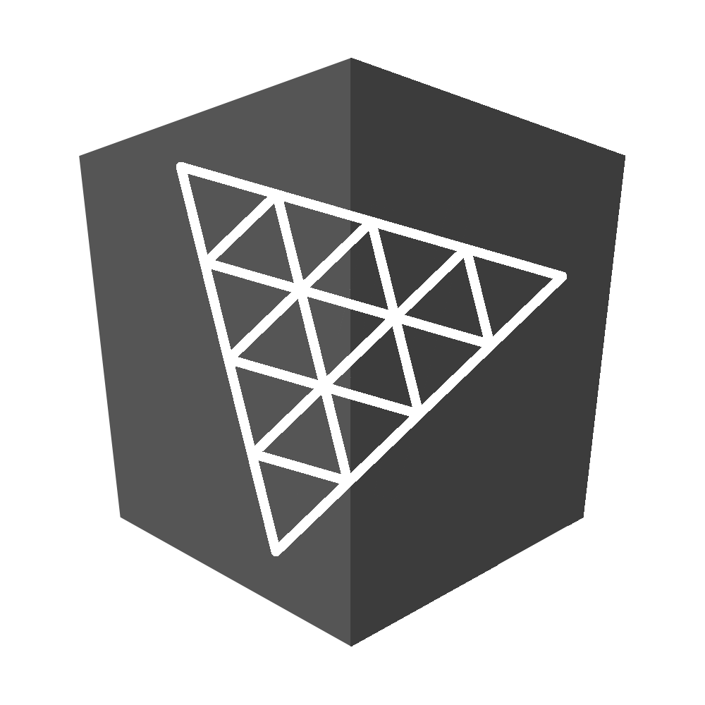
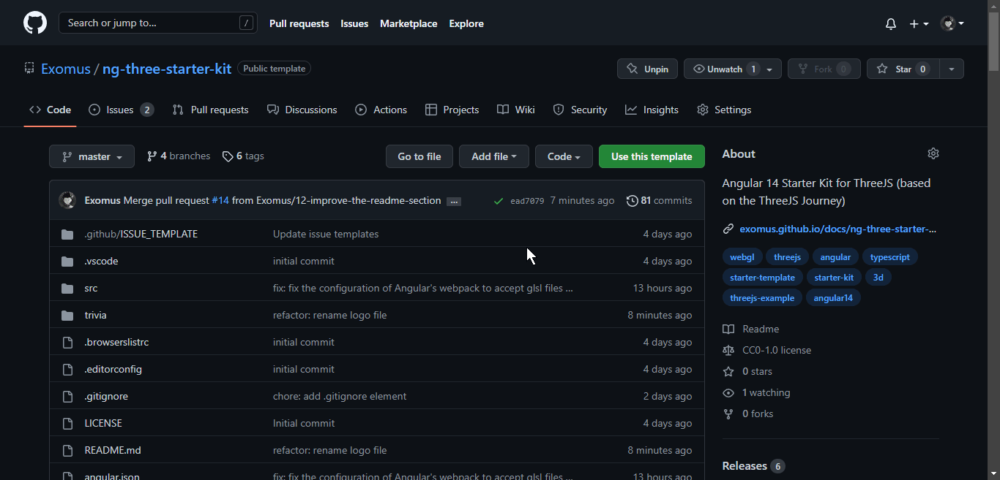

ng-three-starter-kit
An Angular 14 template for your ThreeJS experiences

Stack 🧰


- Angular v14
- Threejs (r146)
- @types/three (r146)
Quick Start 🏁
➡️ Documentation ⬅️
How to use this template 🔧

- Click on Use this template
- Enter the ✨awesome✨ name of your repository
- Choose the visibility of the repo
- Click on Create repository from template
- You are now the owner of a new Angular ThreeJS project. Congratulations !
(You can clone your new repository with git clone <name-of-your-repository> in your Terminal)
Serve the application 👨💻
npm startor
ng serveBy default, you can access it through: http://localhost:4200/
What you should see

Build the application 🏗️
npm run buildor
ng buildA dist folder is generated that can be statically hosted.
Debug and tweak your 3D scene with lil-gui 🐞
By default, you can add #debug in the URL to access the debug panel, useful to tweak your scene.
Be sure to give a reload if you cannot see it.
What you can expect to see

Special Thanks 💖
Huge thanks to Bruno Simon for all the inspiration and the lessons he provides kindly.
This project is highly inspired by the Threejs Journey (Highly recommend it by the way).
I reworked the whole thing, so that it would fit in an Angular 14 project, with Typescript, obviously.
Features 🛠️
- Boilerplate code to set up the Threejs Scene, ready to use.
- 3D Assets to test that the template is working for you with the loaders.
- GLTF Loader: You should see the famous GLTF Fox on startup (animated)
- Texture Loader: You should see the floor with both color and normal textures.
- Cube Texture Loader: You should also see that the environment map is loaded and applied on the scene.
- Architecture of the project in many folders to keep it organized
- Debug UI integrated (equivalent to dat-gui) and easily accessible due to static singleton pattern
- Util service
- Executes the animation loop and the resize outside the NgZone to avoid performance issues due to Angular's Change detection
- Information obtainable easily without painful constructor argument everywhere. (static method)
- Provides a PointerService to handle pointermove events and executes the pointermove callback of the engine outside the NgZone
Incoming Features ⚙️
- Jest integration for unit testing (over Karma/Jasmine)
- Draco Compression option handling for the GLTF loader
Notes 🗒️
You don't need to use the "THREE" namespace in the project as usual. You can simply put the name of the type you want to use and put the right import.
import * as THREE from 'three';
const geometry = new THREE.BoxBufferGeometry(1, 1, 1);
const material = new THREE.MeshBasicMaterial({ color: 0xff0000 });
const mesh = new THREE.Mesh(geometry, material);
//...becomes
import { BoxBufferGeometry, MeshBasicMaterial, Mesh } from 'three';
const geometry = new BoxBufferGeometry(1, 1, 1);
const material = new MeshBasicMaterial({ color: 0xff0000 });
const mesh = new Mesh(geometry, material);
//...It's, in my opinion, a more angular-friendly way of writing our code.
Twitter 🐦
You can reach me on Twitter: